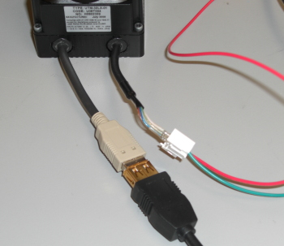
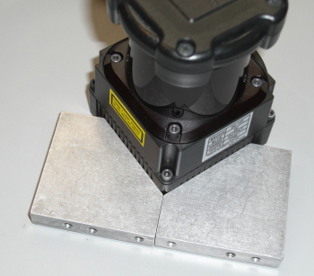

You are testing the Hokuyo UTM-30LX laser rangefinder.
1. Make sure this is the device you are actually testing
2. Plug in the Hokuyo USB and power cables.

3. Place the Hokuyo on the bench, aligned in the blocks.

4. Make sure the area in front of the Hokuyo is clear.